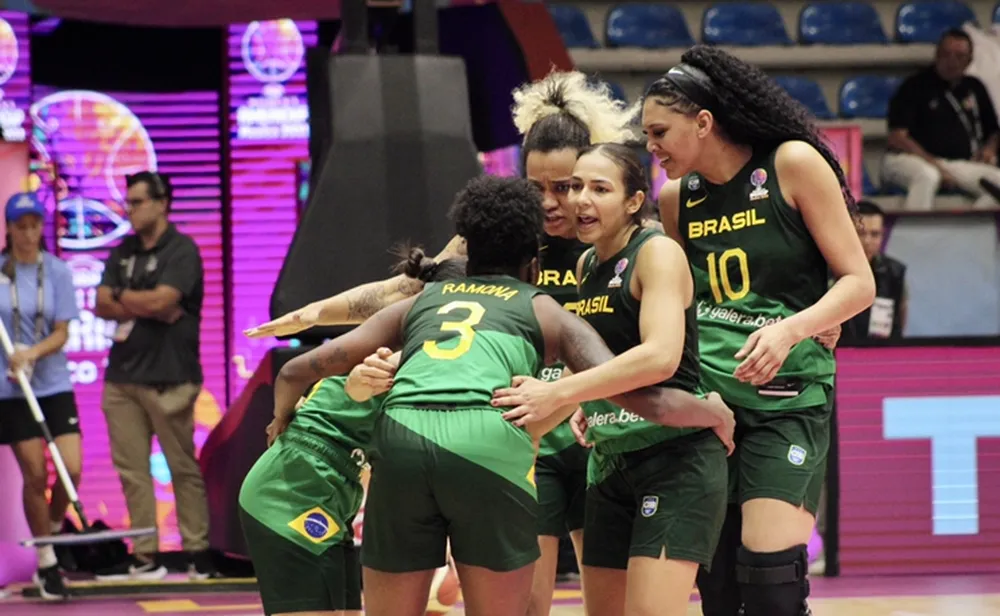

Noticia de Hoje
Brasil vence Venezuela na Copa América feminina de basquete.
Seleção chega à segunda vitória no torneio que vale classificação para o Pré-Olímpico Mundial rumo a Paris 2024 A seleção brasileira feminina de basquete venceu a Venezuela por 90 a 76, na tarde deste domingo, na segunda rodada da Copa América, disputada em León, no México. A cestinha da partida foi a ala-pivô Damiris com 17 pontos, mas o destaque do jogo foi mesmo a pivô Kamilla, que fez um duplo duplo com 15 rebotes e 15 pontos, além de 4 pontos.
Com duas vitórias em dois jogos na competição, as brasileiras lideram o Grupo A. Nesta segunda-feira, às 17h40, o Brasil faz o clássico regional contra a Argentina. Na terça, no mesmo horário, o duelo é contra os Estados Unidos. O torneio vai até domingo, dia 9, e é o primeiro passo rumo aos Jogos de Paris porque dá vaga no Pré-Olímpico Mundial de 2024 aos dois países finalistas. As seleções posicionadas entre o terceiro e o sexto lugares se classificam ao Pré-Olímpico das Américas 2023. O Brasil foi medalhista de bronze nas duas últimas edições da Copa América, em 2019 e 2021. Neste domingo, o técnico José Neto fez mudanças na equipe titular que venceu Cuba e iniciou a partida contra as venezuelenas com Ramona, Sassá, Kamilla, Manu e Alana. E uma das novidades chamou a atenção: a pivô Kamilla Cardoso, de 21 anos e 2,04m, foi o destaque do Brasil nos primeiros minutos de jogo. Com rebotes e pontos, ela dominou o garrafão ofensivo. Kamilla é das principais revelações da seleção e foi campeã da NCAA (principal liga americana de basquete universitário) na temporada 2021/2022, jogando por South Carolina.
Confira a noticia completa aqui.